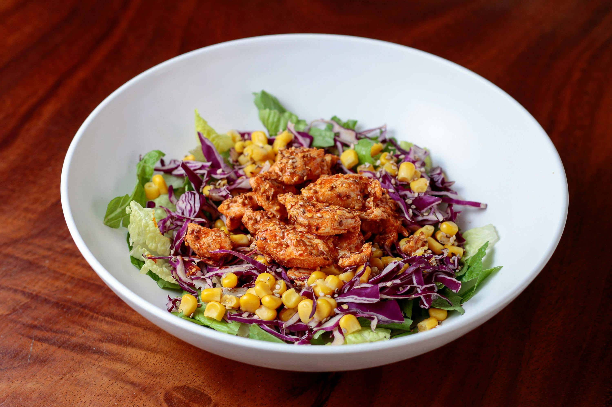

Welcome to SavorPalette: Your Culinary Adventure begins here!
Sign Up TodayRecipes

Chicken Satay
Grilled marinated chicken skewers served with peanut sauce.

Jollof Rice
Popular West African dish made with rice, tomatoes, onions, and spices.

Capresse Salad
Classic Italian salad made with fresh tomatoes, mozzarella cheese, basil, and balsamic glaze